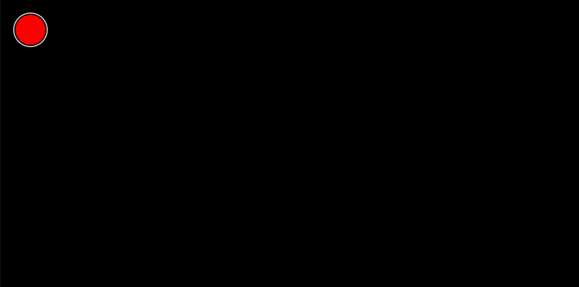
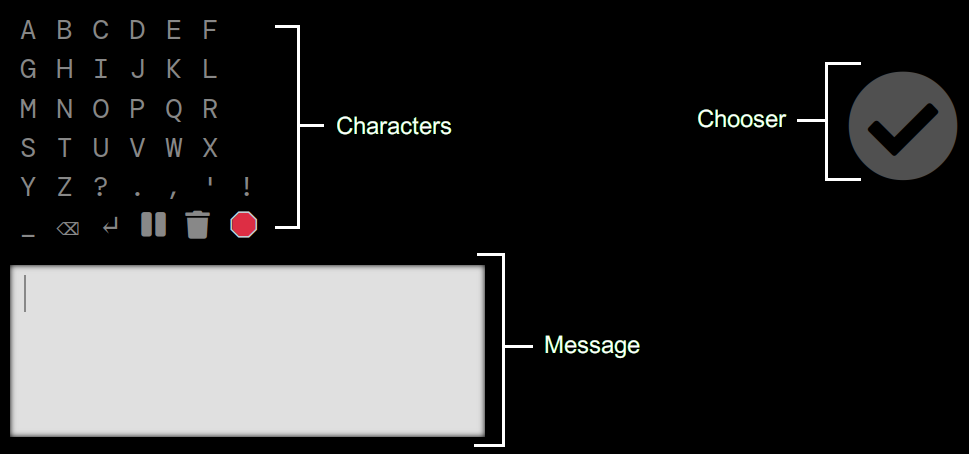
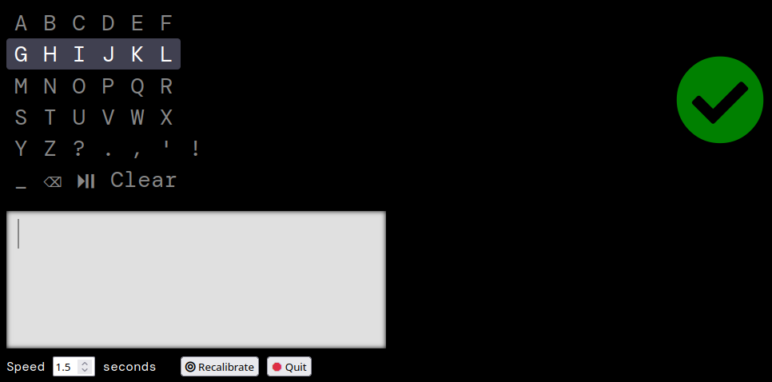
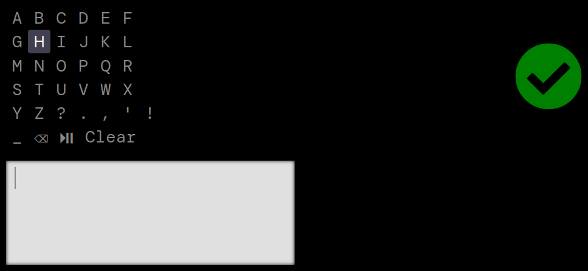
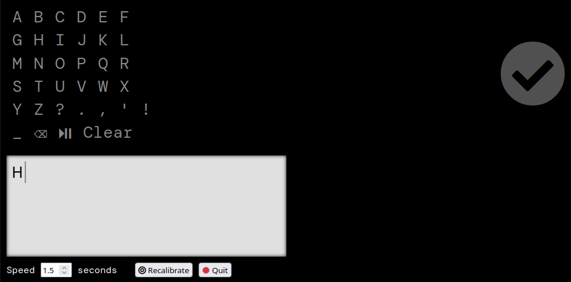
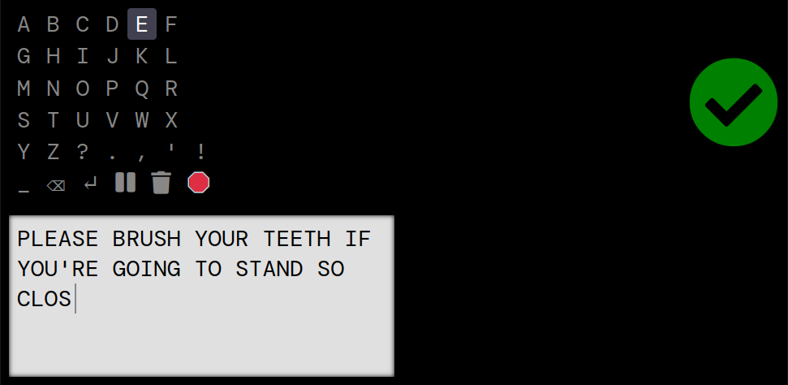

eye say — type with your webcam
We were unable to detect a camera on this device. If you would like to use the eye-typewriter please connect a webcam and reload the page.
Typewriter Instructions
The webcam needs to watch your eyes. So the device needs to be fixed in place, and it will also help if you can stay still.
Calibrating
First the eye tracker needs to calibrate. This process begins automatically when the typewriter page finishes loading. All you have to do is watch the dot.
Make sure the camera sees your eyes while calibrating (e.g. don't scratch your face).
If you have double vision you can wear a patch over one eye. If your head tilts significantly to one side you may also find that you benefit from an eye patch, although you might not need it if you have a good camera and a larger screen.
The typewriter
Next the typewriter appears. You will spend most of your time looking at the left side of the screen where the typing occurs. The character grid at the top left is where you choose the characters you want to type. When you choose a character it appears in the message box.
Let's type the word HI. The character grid automatically highlights one row at a time. The H is in the second row so we'll just wait for that row to get highlighted.

Now that the row with the H is highlighted we look to the right side of the screen. There is a checkmark that indicates you have chosen the highlighted item. It should turn green when you look at it.
Once a row has been chosen its characters are highlighted one at a time. We wait for the H to be highlighted and then look to the right again to choose it.
When we look back to the left we see our letter has appeared in the message box and the cursor has moved one place to the right.
Continue
That's all there is to it! Repeat the process to type your message.
The last row contains characters for space, backspace, pause and clear. If you choose "pause" the highlight rotation stops until you look at the checkmark again. The "Clear" option does just that, it clears everything in the typing box so you can type a new message.
When you miss the row or character you want, just wait and the highlight rotation will go back to the beginning.
At the bottom of the screen you have a few more controls.
- You can adjust the highlight rotation speed.
- It's not unusual to move a bit, which may throw the calibration off, so there is a button to recalibrate the eye tracker whenever needed.
- And of course you will want to quit typing at some point.
If you are helping someone else use the site please keep in mind that the muscles turning the eye eventually tire of moving in these patterns and it may be a good idea to give the typist a break after a while.
Enjoy :)
Privacy
The video feed used for eye tracking does not leave your computer.